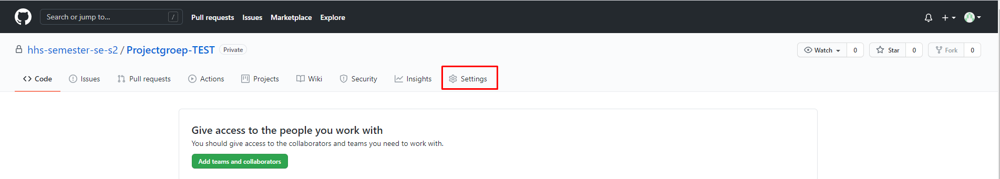
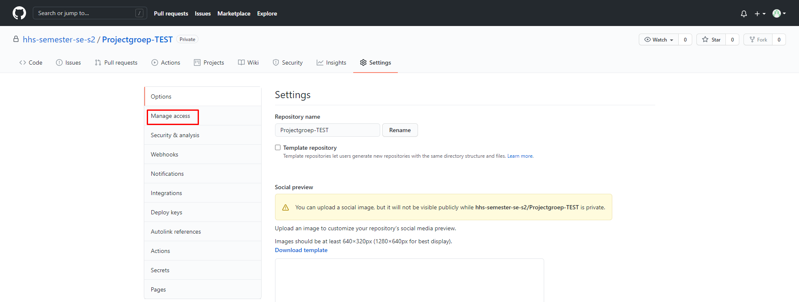
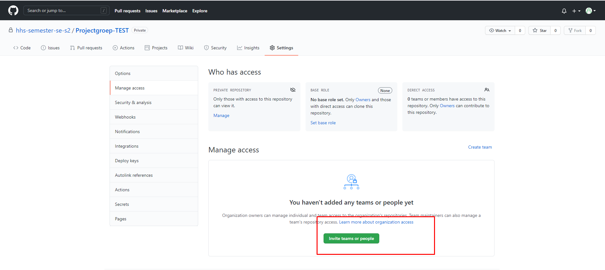
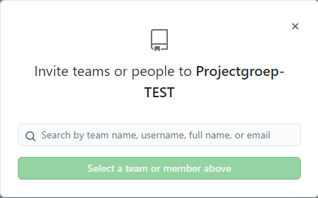
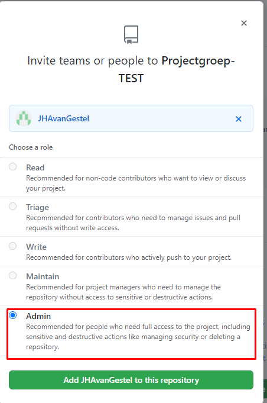

Github
Hoe voeg ik een groepsgenoot toe aan mijn repository?
Volg de onderstaande stappen:
Navigeer naar github.com/hhs-semester-se-s2/Projectgroep-[X]
Waar X staat vul je jouw groepsnaam in. Bijvoorbeeld '1a'.Klik op 'Settings'. 
Klik op 'Manage access'. 
Klik op 'Invite teams or people'. 
Vul de (Github) username van jouw groepsgenoot in. 
Geef jouw groepsgenoot vervolgens 'Admin' rechten en druk op 'Add X to this repository' 
Hierna wordt er een uitnodiging gestuurd naar de persoon die zojuist toegevoegd is.
Door deze uitnodiging te accepteren, maakt deze persoon direct deel uit van de repository.